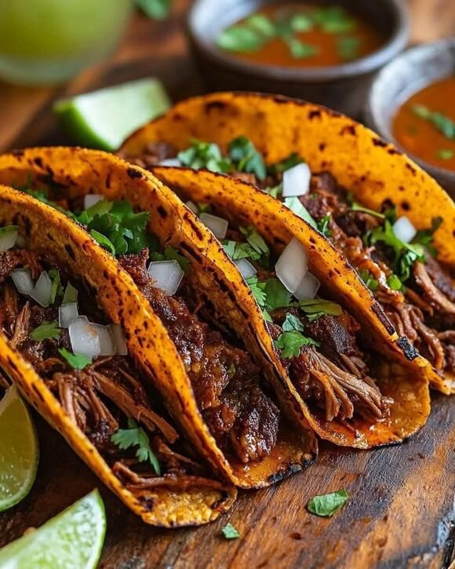

Home
Tacos Barbacoa

Description
Experience delicious barbacoa slow-cooked beef
seasoned with rich chiles and spices.
Piled high on warm tortillas with your favorite
toppings, these tacos are a taste of authentic Mexican comfort.
Ingredients
- 1.5-2.5kg of Beef chuck/Beef brisket
- 3-5 Ancho/Guajillo chilles peppers
- 2 Limes
- White onion
- Cilantro
- Corn tortillas
- Salsa(Chipotle/Verde/Roja)
- Prepare the beef
- Trim the beef of large fat pieces
- Cut the beef to chunks that can fit into the pot
- Season the beef with salt and pepper
- Chilles preparation
- Remove stems and seeds from the peppers.
- lightly sear the peppers from each side on the pan(till it gets nice brown collor)
- Braise the beef
- Set the oven on 140°C
- Cover tightly and place the beef in the pot into the oven
- Let it stay in the oven approximately 4-6 hours
- The beef should be tender enough, to be easily shreded with a fork
- Shred the beef
- Once cooked, remove the beef from the liquid
- Using two forks, shred the beef into tender strands
- Return the shredded beef to some of the braising liquid to keep it moist and flavorful
- Prepare the toppings
- Finely dice the white onion
- Chop the fresh cilantro
- Return the shredded beef to some of the braising liquid to keep it moist and flavorful
- Assemble the dish
- Heat the corn tortillas on a pan
- Tortilla comes on the plate first
- Place a generous portion of the shredded barbacoa meat onto each warm tortilla
- Top with diced white onion and fresh cilantro
- Add your preferred salsa
- Squeeze a lime over the top just before serving
Bon Appetit!